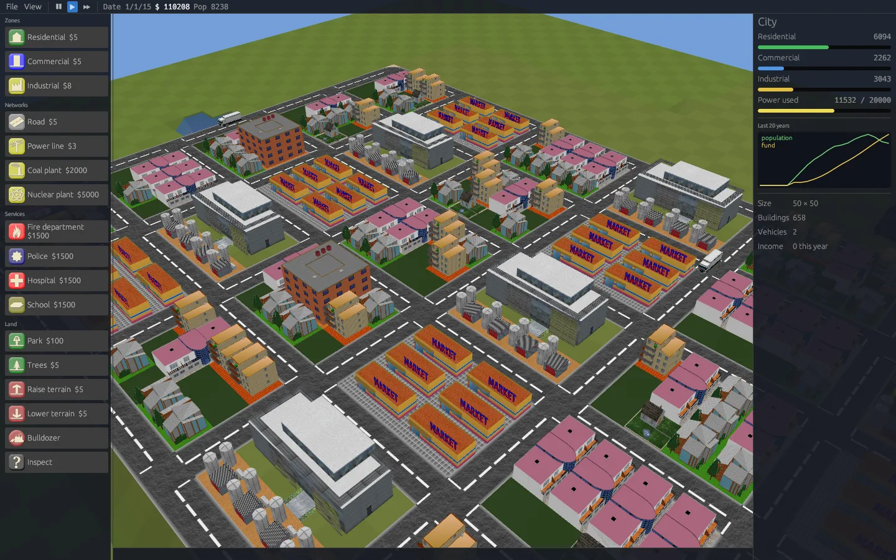
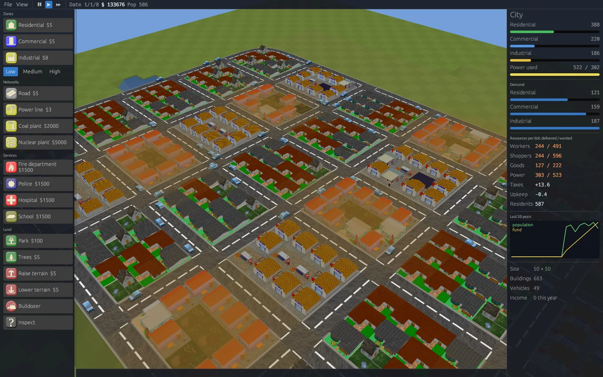
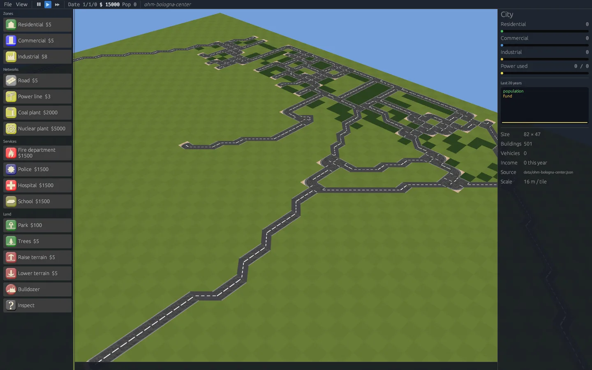
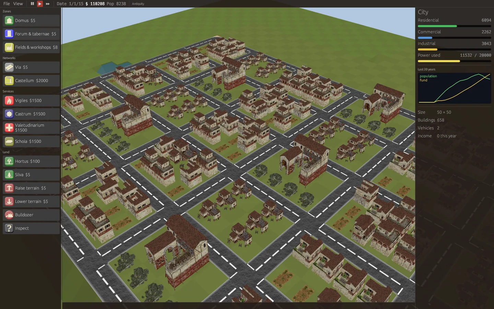
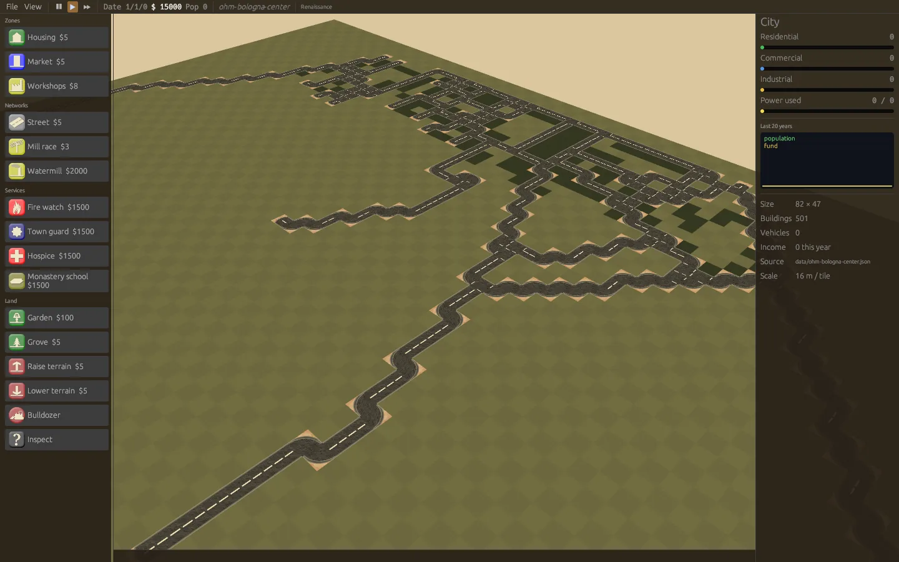
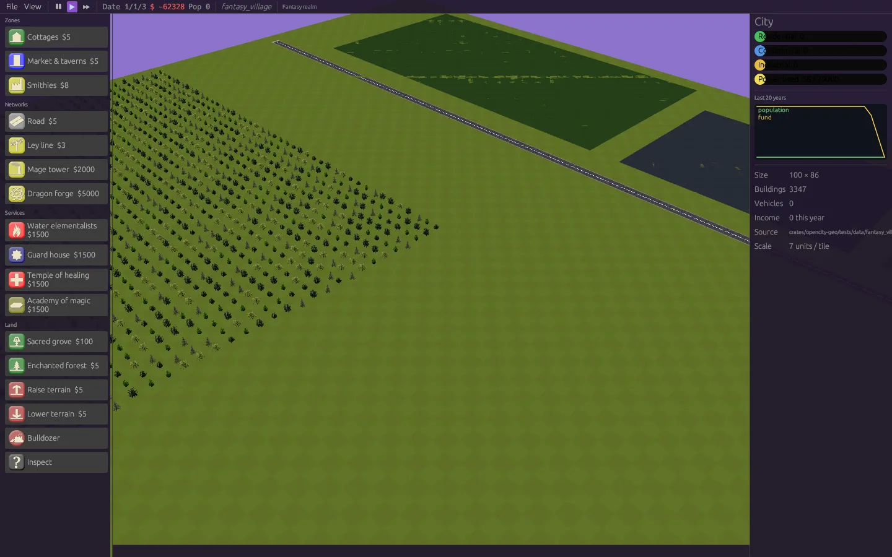

Build a city anywhere, in any age.
citysim is a free 3D city simulation written in Rust, derived from the classic OpenCity. Zone, wire and grow towns on generated terrain, or rebuild real and imagined places from OpenHistoryMap and OpenFantasyMap data, dressed for their era or world.

A city builder you can take apart
The rules of OpenCity, rebuilt as small, tested Rust crates. The simulation runs without a window, so the same city works in the game, the command line and your own tools.
Classic or GlassBox
Play by OpenCity's original growth rules, or by a data-driven GlassBox engine where every building needs and produces resources that roads and grids carry across the city.
Same seed, same city
No threads and no globals. Every run with the same seed evolves identically, which makes cities testable, shareable and easy to replay.
Generated or loaded
Plains, hills, mountains, islands and volcanoes from a seeded generator, or any greyscale heightmap. Raise and lower the ground yourself.
Desktop and Android
Linux, Windows, macOS (Apple Silicon and Intel) and Android, with touch controls. A headless CLI creates, simulates, renders, imports and exports cities.
A GlassBox city, written as rules
The simulation can run on rules in the spirit of GlassBox, the engine Maxis built for SimCity. Zones, with low, medium and high densities, need and produce resources. Networks move them: workers, shoppers and goods by road, power through the grid. Services use them and cover the map with fire, police, health and education. Demand comes from what is left unmet or undelivered.

- Everything is data: resources, networks, map layers, zones, densities, buildings and services live in a rules file you can copy and change.
- The GlassBox rule language:
unitRule,mapRule,zoneRuleandagentRulescripts compile into the engine. - Extended GlassBox: timestamped metrics (
log) and agents that change maps along their routes (area), exportable as CSV to compare with measured data. - Overlays: pollution, land value, air quality, noise and service coverage.
- Graphs: press G to plot any of the engine's series over time (demand, resource flows, satisfaction, layers, metrics, growth), with trends, oscillation counts and CSV export.
- Resource network: press V to see workers, goods, cars and power travel across the city, and click a building to see where its supplies come from and what it lacks.
- Resource kinds: petrol and electric cars share the same parking, but one needs fuel and leaves smog, the other draws on the power grid.
unitRule plantMetrics
appliesTo coal_plant
log -timestamp=Time PowerOutput 400
end
agentRule freightTraffic
condition resource=goods
repeatAfter 3
area -timestamp=Time -map=AirQuality pm10 1.2 1
end
zoneRule familyNeighbourhood
appliesTo residential
sample random -count 2
test map pollution less 3
createUnit -id house_2
endLanguage references: Andrew Willmott, Inside GlassBox (GDC 2012), and A. R. Costagliola, M. Montanari, P. Bellavista, Interconnecting Urban Networks: a Novel Approach to Digital Twins through GlassBox Adaptation (University of Bologna). Details in GLASSBOX.md and RULES.md.
Your map is the level
Feed it GeoJSON or Overpass JSON and get a playable city: roads, power lines, zones, parks, services, water and elevation.
- OpenHistoryMap / OpenHistoricalMap: pick a date with
--date 1600and only what existed then is built. - OpenFantasyMap: planar worlds with no Earth coordinates, mapped through your own tag vocabulary.
- Declarative rules: a TOML file says which properties become which buildings.
- Round trip: export the city back to GeoJSON in its source coordinates.
- Natural streets: roads are drawn as smooth ribbons, so zig-zags of tiles become flowing diagonals and curves.

One simulation, many worlds
Skins re-dress the game for the era of a historical map or the world of a fantasy one: colours, names, available tools, icons and 3D models. Pick an era and a culture when you create a city, or let the date or the world choose. Six ancient cultures (Romans, Athenians, Gauls, Ptolemies, Han and Mauryas) are built from 0 A.D.'s own models, converted on first launch from the official repository.



Download
Unpack the archive and run opencity from inside the folder, next to
assets/. The Android APK is debug-signed, for sideloading.
All files and notes are on the releases page. On macOS the binaries are unsigned: right-click and choose Open the first time.
Or build it
# everything runs in a pinned Docker image (Rust 1.88.0)
git clone https://github.com/sirmmo/citysim && cd citysim
scripts/dev.sh cargo test --workspace
cargo run --release -p opencity -- --demo --simulate-years 10
# a city from OpenHistoricalMap, as it was in 1600
cargo run --release -p opencity -- --geojson data/ohm-bologna-center.json --date 1600Standing on OpenCity
citysim began as a port of OpenCity's SVN trunk (revision 480), the GPL city simulation by Duong Khang NGUYEN, Frédéric RODRIGO and contributors (2003–2015).
- The growth rules, power, traffic, budget and terrain generator are ported from the C++ sources.
- All of OpenCity's models, textures, interface art and sounds ship unchanged.
- Old OpenCity save files can still be imported.
Read the credits and the porting notes.
README · GeoJSON import · Skins · GlassBox rules · Settings
GPL-2.0-or-later, like OpenCity. 0 A.D. art is CC BY-SA 3.0 and is not part of the repository.